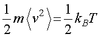
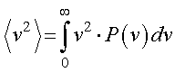
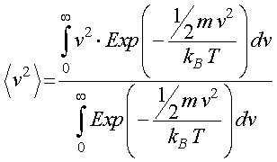

さて，気体の分子の運動と理想気体の状態方程式からエネルギー等分配則を求めましたが，分子の運動エネルギーのボルツマン分布から求めてみましょう．
これは，
生物学におけるランダムウォーク
の日本語版のp.73にさらりと書かれているのですが，実際に計算してみましょう．
x軸方向に速度ｖで動く質量ｍの粒子は等分配則により，平均<v2>で移動し，その関係は，

となります．
この速度の二乗の平均値は，ある速度とその確率，P，で計算できますので，

となります．この確率，P，がボルツマン分布に従うので，

となります．
生物学におけるランダムウォーク，では，さらりと．．．”定積分の公式から．．”とあるのですが，さて．．．．結構難しい積分です．
分母は誤差関数から何とか求めることができるのですが（ここに記載），分子が．．．．
でも．．ふと気づきました．．．．これって正規分布じゃないか．．．．とつまり，
とよく似ていますよね，これならある程度答がわかっていますので，これを用いて計算を行ってみましょう．
まずは，簡単な分母から．